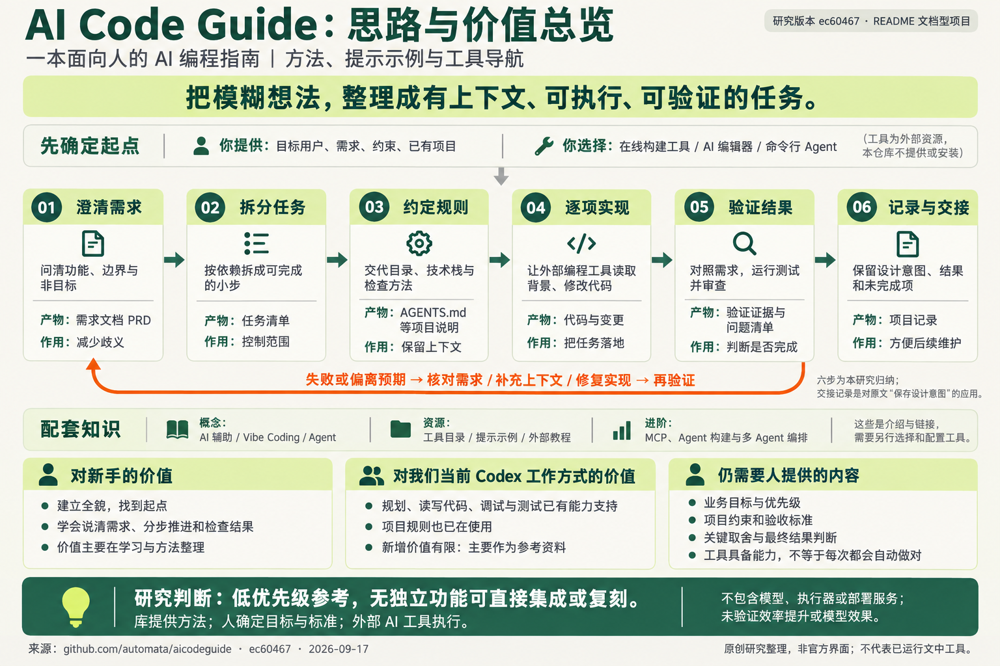

{kind=link}
建立 AI 编程地图
区分辅助编程、自然语言驱动开发和 Agent 循环，理解人的参与方式。
帮助判断：要让 AI 参与到哪一步
概念与协作方式 ↗一本组织 AI 编程方法的路线指南。它帮助你说清需求、安排任务、约束实现，再检查结果。
它帮助人理解 AI 编程流程。我们已在使用 Codex 的规划、实现与验证能力，以及项目规则；该库没有增加独立可集成或复刻的功能。
一图查看完整思路与价值 ↓依据固定版本整理；步骤分组与中文解读为本项目归纳。研究版本 ec60467 ↗

区分辅助编程、自然语言驱动开发和 Agent 循环，理解人的参与方式。
汇集编辑器、命令行助手、在线构建平台及辅助工具，提供继续研究的入口。
通过问答澄清需求，再组织成产品需求文档（PRD）和有依赖关系的任务清单。
用项目说明、规则文件和历史记录传递约定；为旧项目按具体功能补充背景。
把错误、测试结果和代码审查送回开发过程，关注需求是否被正确理解。
介绍工具连接、Agent 构建和多 Agent 编排，链接到相应教程与项目。
以“个人资料收藏页”为例，点击步骤查看输入、产物和验收条件。以下为我们设计的教学示例，未调用模型或生成真实应用。
把“做一个收藏页”变成可以核对的范围。模糊的问题在这里解决，可以减少实现阶段的猜测。
谁来用、需要保存哪些内容、是否跨设备、这次先做什么。
需求说明：单人使用；保存标题、HTTPS 链接和标签；支持搜索；本版不做登录或云同步。
我要做一个个人资料收藏页。请先确认数据保存位置、必需字段和搜索范围，再整理功能范围、非目标和验收条件。暂时不要实现。
能明确回答“刷新后数据是否保留”“搜索哪些字段”“输入不合法时怎么办”。
测试失败后，回到具体问题。先核对需求，再检查实现；必要时更新规则与任务。六步是便于理解的整理方式，不代表一次走完就会成功。
需求、任务、上下文与验证建议
确认取舍、审查结果、决定是否交付
具体能力取决于所用模型、工具和环境
先做一条完整的小流程。例如先完成“新增收藏 → 列表可见 → 刷新仍在”，再增加标签和搜索。
借鉴重点：需求问答、任务依赖、小步交付从具体变更开始，提供相关入口、现有约定和受影响部分。例如新增标签筛选，同时保留已有数据格式。
借鉴重点：局部需求、项目上下文、回归检查补齐复现步骤、预期表现、实际报错与已尝试的方法。先定位失败环节，再要求验证修复是否有效。
借鉴重点：错误反馈、测试与人工审查我们已经有 AGENTS.md、固定编号、项目索引和检查脚本。可进一步在子项目里写清“要研究的问题 → 计划观察什么 → 实际证据 → 结论的边界”，让下一次研究可以接着做。
这是本项目结合当前仓库提出的使用建议；研究记录与验收模板并非上游自带功能。
| 你想完成的事 | 这份指南提供什么 | 还需要什么 |
|---|---|---|
| 明确需求、组织任务 | 流程建议和提示示例 | 具体业务背景与人工决策 |
| 生成、编辑、运行代码 | 工具入口和使用建议 | 编程助手与项目运行环境 |
| 判断质量、修复错误 | 测试、审查与反馈思路 | 可核对的标准与实际验证 |
| 连接工具、编排 Agent | 概念介绍与外部教程 | 单独配置、集成和运行相关项目 |
| 浏览这次中文研究 | 原文作为研究依据 | 当前页面提供原创解读和静态示例 |
流程合理不代表结果自动正确。当前研究版本没有随附基准实验、自动测试或可直接运行的实现。
正文同时保留 2025 年经验和 2026 年补充。具体价格、模型优劣、命令参数需要查当时的官方资料。
技术栈偏好、全量上下文和多 Agent 方案都要结合项目判断。当前页面不把这些经验当作实测排名。
需求文档能帮助减少歧义，但无法消除模型错误。测试设计、代码审查与真实使用反馈仍然重要。
低优先级参考：对新手有入门价值，对我们当前的 Codex 工作方式，新增价值有限。它整理的是方法与资源，没有独立功能可直接集成或复刻。规划、读写代码、调试与测试已有工具能力支持；业务目标、约束和验收标准仍需我们明确。
作者：Vilson Vieira、Eric S. Raymond。上游 README 声明 MIT；该版本未提供独立 LICENSE 文件。本页为原创中文归纳，无上游代码或图片复制。
上游许可声明 ↗